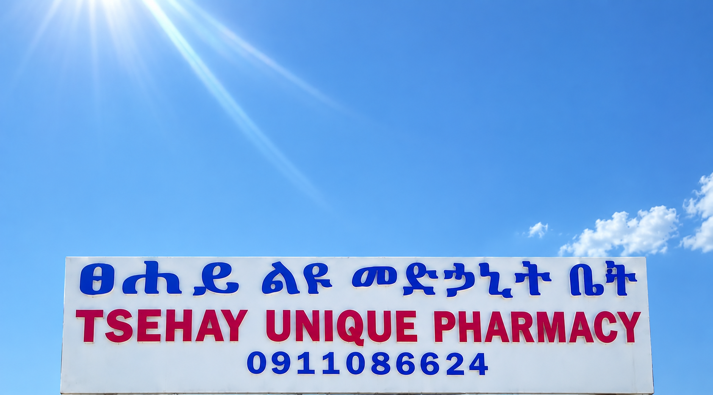

Direct Consultations & Care
Visit, call or message us.
Bole Road, Addis Ababa. A licensed pharmacist is always on call.

Bole Road Pharmacy Hub
Find us
Bole Road, Addis Ababa · Licensed Community Pharmacy
Conveniently situated with roadside parking, step-free access, and dedicated private consultation areas for unhurried dosage reviews and vital screenings.
| Monday – Saturday | 8:00 AM – 8:00 PM |
| Sunday | 9:00 AM – 5:00 PM |
| Holidays | On-call Pharmacist (+251 91 108 6624) |